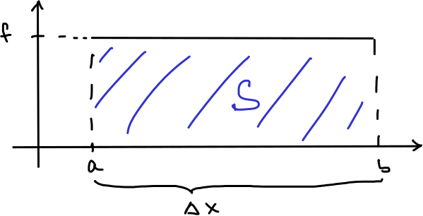
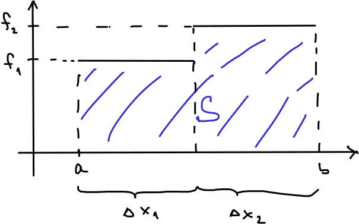
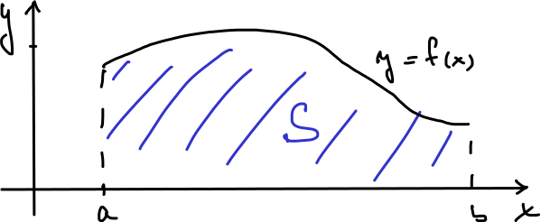
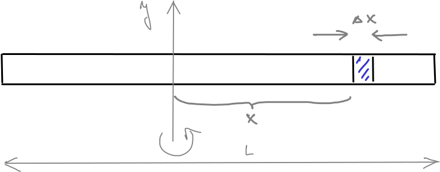
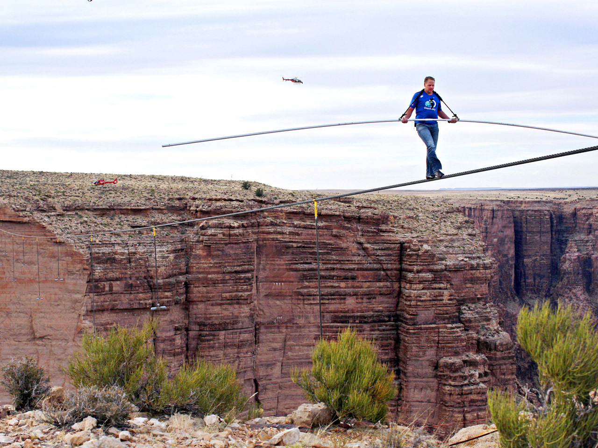

10. Integrál#
10.1. Neurčitý integrál#
Představíme nástroj, který nám umožní z rychlosti, s jakou se mění veličina \(f\), určit rovnici udávající závislost veličiny \(f\) na čase.
Definition (Neurčitý integrál)
Řekneme, že funkce \(F\) je primitivní funkcí k funkci \(f\) na intervalu \(I\), jestliže platí
Otázku (ne-)jednoznačnosti řeší následující věta.
Věta (Jednoznačnost primitivní funkce)
Primitivní funkce je dána jednoznačně, až na aditivní konstantu.
Je-li \(F\) primitivní funkcí k funkci \(f\) na intervalu \(I\), platí totéž i pro funkci \(G(x)=F(x)+c\), kde \(c\in\mathbb R\).
Jsou-li \(F\) a \(G\) primitivní funkce k téže funkci \(f\) na intervalu \(I\), existuje \(c\in\mathbb R\) takové, že
\[ F(x)=G(x)+c \]na \(I\).
Příklad. Funkce \(x^2\) má primitivní funkce například \(\frac 13 x^3\), nebo \(\frac 13 x^3+7\), nebo \(\frac 13 x^3+\pi\), protože derivace všech těchto tří funkcí je \(x^2\). Platí
Poznámka 10.1 (Vzorce pro výpočet integrálu)
\(\displaystyle\int c\,\mathrm dx=cx+C\)
\(\displaystyle\int x^n\,\mathrm dx= \frac{x^{n+1}}{n+1}+C\)
\(\displaystyle\int e^{ax}\,\mathrm dx=\frac 1a e^{ax}+C\)
10.1.1. Funkční předpis z rychlosti změny a výchozího stavu#
Uvažujme těleso, jehož teplota klesá známou rychlostí. Derivace teploty podle času je \(\frac{\mathrm dT}{\mathrm dt}=-0.1 e^{-0.01 t} \,{}^\circ \mathrm C/\mathrm{min}.\) Cílem je najít teplotu jako funkci času. Dodatečná informace je, že počáteční teplota je \(28 ^\circ \mathrm{C}\).
Použijeme skutečnost, že integrál konstantního násobku je konstantní násobek integrálu a vzorec
Poznámka (vlhkost dřeva elektrickou metodou). Podobný výpočet se využívá u měření elektrického odporu dřeva pro stanovení vlhkosti. Protože elektrický odpor dřeva je velký, není vhodné pro určení elektrického odporu použít Ohmův zákon a změřený proud a napětí. Jedna z možností je měření času nutného k nabití nebo vybití kondenzátoru přes odpor. V případě nabíjení proud exponenciálně klesá (zdůvodníme později v přednášce věnované diferenciálním rovnicím) a proto (díky elektrickým vlastnostem kondenzátoru) exponenciálně klesá i rychlost, s jakou roste napětí na kondenzátoru. Toto napětí je nutné pro výpočet odporu. Pokud známe rychlost, s jakou se napětí mění, určíme napětí integrováním a znalostí napětí na začátku nabíjení.
Poznámka (Veličina vypočtená z rychlosti své změny)
Pokud se veličina \(f(t)\) mění v čase rychlostí \(r(t)\), platí
10.2. Určitý integrál (Newtonův)#
Představíme si mírnou modifikaci neurčitého integrálu. Rychlost změny nebudeme používat k hledání předpisu funkce, ale budeme hledat změnu funkce na zadaném intervalu.
Definition (Newtonův určitý integrál)
Buď \(f\) funkce a \(F\) její primitivní funkce na intervalu \(I\). Buď \([a,b]\subset I\) podinterval v \(I\). Určitým integrálem funkce \(f\) na intervalu \([a,b]\) rozumíme veličinu označenou a definovanou vztahem
Poznámka (Změna veličiny vypočtená pomocí rychlosti)
Pokud se veličina \(f(t)\) mění v časovém intervalu od \(t=a\) do \(t=b\) rychlostí \(r(t)\), je změna veličiny \(f\) za tento časový okamžik rovna
Označení. Výraz \(F(b)-F(a)\), tj. změnu funkce \(F(x)\) na intervalu \([a,b]\), označujeme také \([F(x)]_a^b\). Tento zápis se často používá jako mezivýpočet při výpočtu určitého integrálu.
10.2.1. Změna funkce z rychlosti změny (časová změna teploty)#
Uvažujme těleso, jehož teplota klesá známou rychlostí. Derivace teploty podle času je \(\frac{\mathrm dT}{\mathrm dt}=-0.1 e^{-0.01 t} \,{}^\circ \mathrm C/\mathrm{min}.\) Chceme určit pokles teploty za první hodinu a pokles teploty za druhou hodinu.
Neurčitý integrál
Nyní zapojíme určitý integrál. Nepotřebujeme informaci o počáteční teplotě, ale zato jsme schopni určit jenom změnu teploty za daný časový interval. Za první hodinu bude změna teploty \dm
10.2.2. Další motivace#
Ze středoškolské fyziky dobře známe vzorce pro dráhu, práci a tlakovou sílu. Ovšem jenom v extrémně pěkných případech, kdy se tyto veličiny určují součinem.
Dráha rovnoměrného pohybu je určena vzorcem
(10.1)#\[s=vt.\]Tento vzorec není použitelný pro pohyb proměnnou rychlostí. Z kapitoly o neurčitém integrálu víme, že obecný vzorec je
(10.2)#\[s=\int v\,\mathrm dt.\]Pokud je \(v\) konstantní, vzorec (3.1) je důsledkem vzorce (3.2).
Hydrostatická tlaková síla \(F\) působící ve vodě v hloubce \(h\) na plochu o velikosti \(S\) se určí podle vztahu
\[F=Sh\rho g,\]kde \(\rho\) je hustota vody a \(g\) tíhové zrychlení. Tento vzorec však není možné použít, pokud různé části plochy jsou v různých hloubkách. Například není možné pomocí tohoto vzorce určit celkovou sílu na svislou stěnu reprezentující hráz přehrady, protože různé části stěny jsou v různých hloubkách.Práce vykonaná konstantní silou \(F\) po dráze \(s\) je
(10.3)#\[W=Fs.\]Co když se ale síla nebo dráha mění? Pokud nás zajímá práce nutná k navinutí visícího řetězu na rumpál, síla se během namotávání plynule zmenšuje, protože visící kus řetězu se při namotávání zkracuje. Pokud nás zajímá práce nutná k vyčerpání vodní nádrže, musíme každý litr vody, který je na dně, „tahat“ po delší dráze než každý litr vody, který je na hladině a proto se mění dráha. Vzorec (3.3) selhává v obou případech. Jednou kvůli nekonstantní síle, podruhé kvůli dráze.
\iffalse

Obr. 10.1 Obsah pod konstantní funkcí.#
\fi
Obsah obrazce mezi konstantní funkcí \(f\) a osou \(x\) nad intervalem \([a,b]\) se vypočte snadno, protože se jedná o obdélník se stranami \(f\) a \(\Delta x=b-a\). Proto
\[S=f\cdot \Delta x.\]Tento přístup však není možné použít, pokud se funkce \(f\) na intervalu \([a,b]\) mění. Formálně je tato úloha stejná jako ostatní úlohy výše, má však snadnou geometrickou interpretaci. Právě tuto interpretaci využijeme v následujícím k definici druhého typu určitého integrálu (Riemannova).
10.3. Určitý integrál (Riemannův)#

Obr. 10.2 Obsah pod konstantní funkcí.#

Obr. 10.3 Obsah pod funkcí po částech konstantní.#

Obr. 10.4 Obsah pod obecnou funkcí je \(\int_a^b f(x)\,\mathrm dx\).#
Úloha 1. Snadným důsledkem vzorce pro obsah obdélníka je obsah obrazce mezi grafem konstantní funkce a osou \(x\).
Úloha 2. Obsah pod funkcí složené ze dvou konstantních funkcí napojených na sebe se vypočte jako součet obsahů dvou obdélníků.
Prostředky matematické analýzy je možné „zjemňovat dělení do nekonečna“, přesněji, můžeme použít limitní přechod podobný limitnímu přechodu, který v definici derivace převedl podíl (průměrnou rychlost) na derivaci (okamžitou rychlost). Díky tomu není nutné se omezovat na po částech konstantní funkce, ale postup bude fungovat i pro velmi obecné funkce. Výsledným produktem je Riemannův integrál.
Riemannův integrál je velmi názorný, ale poměrně obtížně se počítá, pokud postupujeme přímo podle definice. Pokud však je funkce v určitém smyslu pěkná (má primitivní funkci na intervalu, který uvnitř obsahuje interval \([a,b]\)) jsou Riemannův a Newtonův integrál stejné. Proto mezi nimi nerozlišujeme, používáme jeden pojem určitý integrál a počítáme jej pomocí definice Newtonova integrálu. Obsah obrazce pod křivkou \(f(x)\) je roven
V teorii Riemannova integrálu má vzorec
Algorithm 10.1 (Nasčítání příspěvků k celkové dráze)
\iffalse
Obr. 10.5 Při pohybu proměnnou rychlostí je dráha integrálem rychlosti. Zdroj: pixabay.com#
\fi
Těleso pohybující se po dobu \(\Delta t\) konstantní rychlostí \(v\) po přímce urazí dráhu
\[s=v\Delta t.\]Těleso pohybující se po dobu \(\Delta t_1\) konstantní rychlostí \(v_1\) po přímce a poté po dobu \(\Delta t_2\) rychlostí \(v_2\) urazí celkovou dráhu
\[s=v_1\Delta t_1+v_2\Delta t_2.\]Toto je možné zobecnit na libovolný pohyb skládající se z konečného počtu úseků, kdy se těleso pohybuje konstantní rychlostí.\[s=v_1\Delta t_1+v_2\Delta t_2+\cdots +v_k \Delta t_k=\sum_{i=1}^k v_i\Delta t_i\]Příspěvek za každou část pohybu, kdy je rychlost konstantní, je\[\Delta s=v\Delta t, \]kde \(v\) a \(\Delta t\) jsou příslušná rychlost a doba pohybu, po kterou je rychlost konstantní.Pokud se rychlost mění spojitě a \(a\) a \(b\) jsou počáteční a koncový okamžik pohybu, platí
\[s=\int_a^b v(t)\,\mathrm dt.\]
\iffalse
Obr. 10.6 Při posuzování stability rozhledny hraje moment setrvačnosti ústřední roli. Moment setrvačnosti rozhledny je možné získat součtem momentů setrvačnosti jednotlivých trámů. Rozhledna Bohdanka. Zdroj: http://tvstav.cz#

Obr. 10.7 Tyč rotující okolo kolmé osy.#

Obr. 10.8 Provazochodec při přechodu přes Grand Canyon. Zdroj: cbsnews.com#
\fi
Kinetická energie tělesa o hmotnosti \(m\) pohybujícího se posuvným pohybem rychlostí \(v\) je dána vztahem \(E=\frac 12 mv^2\). Kinetická energie tělesa o momentu setrvačnosti \(J\) pohybujícího se otáčivým pohybem úhlovou rychlostí \(\omega\) je dána vztahem \(E=\frac 12 J\omega ^2\). Odsud vidíme, že energie potřebná k vyvolání rotačního pohybu je úměrná momentu setrvačnosti. Moment setrvačnosti je tedy jakousi mírou odolnosti tělesa vůči silám, které se jej snaží uvést do rotačního pohybu. Zjednodušeně, větší moment setrvačnosti znamená, že těleso je stabilnější.
Moment setrvačnosti hmotného bodu o hmotnosti \(m\) vzhledem k ose otáčení vzdálené \(r\) od tohoto bodu je \(J=mr^2\). Pro soustavu hmotných bodů stačí příspěvky sečíst. Pro případ tělesa se spojitě rozloženou hmotností bychom museli „sečíst nekonečně mnoho nekonečně malých příspěvků“ a proto sčítáme integrálem.
Budeme studovat rotaci tyče o hmotnosti \(m\) a délce \(L\) okolo osy kolmé k tyči. Nechť je tyč položena podél osy \(x\) a rotuje okolo osy \(y\). Kousek tyče o délce \(\Delta x\) má hmotnost \(\frac{\Delta x}{L}m\) a pokud je jeho vzdálenost od osy \(y\) rovna \(x\), příspěvek k celkovému momentu setrvačnosti je
Pro tyč umístěnou levým koncem v počátku dostáváme moment vzhledem k ose procházející koncem tyče ve tvaru
\[J=\int_0^L \frac{m}{L} x^2\,\mathrm dx=\frac mL \left[\frac 13 x^3\right]_0^L= \frac mL \frac 13 L^3=\frac 13 mL^2. \]Pro tyč umístěnou středem v počátku dostáváme moment vzhledem k ose procházející středem ve tvaru \dm
\[J=\int_{-\frac L2}^{\frac L2} \frac{m}{L} x^2\,\mathrm dx=\frac mL \left[\frac 13 x^3\right]_{-\frac L2} ^{\frac L2} = \frac mL \left[\frac 13 \frac {L^3}8 - \frac 13 (-1)^3 \frac {L^3}8\right] = \frac 1{12} mL^2. \]
Závěr.
Na roztočení tyče okolo konce je potřeba více energie, než na roztočení okolo středu. Čtyřikrát více. (Z praxe víme, že s dlouhým žebřem se manipuluje nejlépe, pokud jej držíme uprostřed.)
Tyč o konstantní délkové hustotě \(\tau\) (dané použitým průřezem a materiálem) má hmotnost \(m=\tau L\) a moment setrvačnosti vzhledem ke středu
\[J=\frac1{12}\tau L^3.\]Vidíme, že moment setrvačnosti roste dramaticky při zvětšování délky, s třetí mocninou. Proto provazochodci nosí na laně dlouhou tyč a proto při extrémních výkonech, jako je přechod Grand Canyon, bývá použita extrémně dlouhá tyč (pro Grand Canyon 9.1 metrů a 20 kilogramů, viz Nik Wallenda).